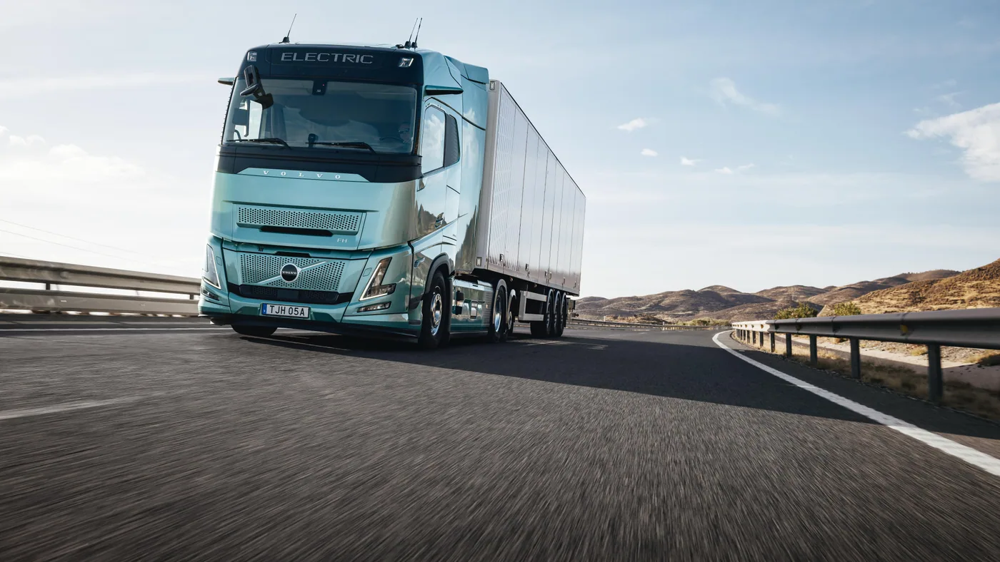
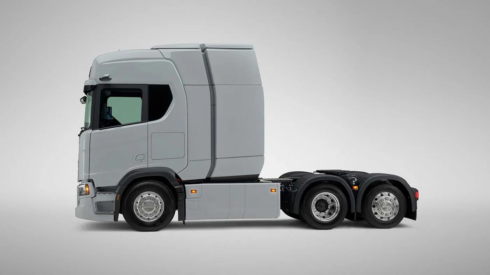
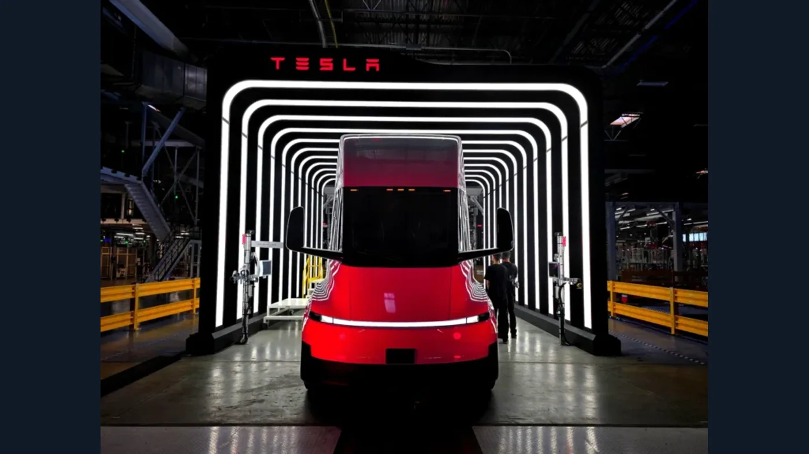
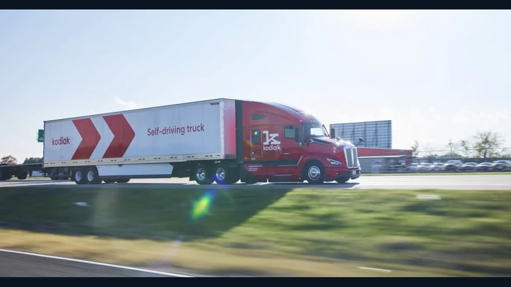

El camión del futuro no tiene una sola forma. En 2026 conviven vehículos eléctricos ya ofrecidos para determinadas operaciones, desarrollos de hidrógeno que todavía preparan series pequeñas y plataformas autónomas que trabajan bajo condiciones muy específicas. Elegimos cinco ejemplos por la novedad técnica que representan, no porque exista una clasificación oficial de “los mejores”.
Esta selección tiene una regla: separar las cifras anunciadas por cada fabricante de la experiencia real de una flota. Una autonomía máxima de catálogo no describe automáticamente un viaje con viento, pendientes y carga completa. Y una prueba en un corredor controlado no equivale a circular sin conductor por cualquier ruta. Con esa distinción, estos cinco casos sí permiten ver cambios concretos.
1. Mercedes-Benz NextGenH2 Truck: larga distancia con hidrógeno líquido
El NextGenH2 lleva una pila de combustible que convierte hidrógeno en electricidad para mover el camión. Daimler Truck lo presentó en enero de 2026 como un paso posterior al GenH2 de pruebas. La propuesta utiliza hidrógeno líquido y apunta a recorridos largos: la marca comunica una autonomía superior a 1.000 kilómetros como objetivo de la plataforma.
La cifra más importante para interpretar su estado es otra. Daimler planea poner alrededor de 100 unidades de una serie pequeña en operaciones de clientes desde fines de 2026. En junio señaló que Dachser recibiría la primera unidad a fines de diciembre. Al 17 de octubre, eso sigue siendo un despliegue previsto, no una flota masiva en venta en Argentina.
¿Qué lo hace futurista? La combinación de un camión eléctrico de larga distancia con un combustible que exige una cadena distinta de almacenamiento y abastecimiento. El vehículo no resuelve solo esa cadena. Para que una empresa pueda usarlo, necesita puntos compatibles, seguridad operativa, personal formado y respaldo de piezas. La estación de carga de hidrógeno forma parte de la solución tanto como la tractora.
2. Volvo FH Aero Electric de autonomía extendida: el eje también es motor

Volvo anunció en abril de 2026 una versión del FH Aero Electric con hasta 700 km por carga según sus condiciones de referencia. Su novedad central es el e-axle: integra motores eléctricos y caja en el eje trasero para liberar espacio en el chasis. Ese espacio permite montar más baterías, en lugar de limitarse a agrandar el vehículo.
La marca indica carga del 20% al 80% en unos 50 minutos con un sistema MCS de 700 kW para la configuración descrita. Es una prestación condicionada por el cargador, la batería, la temperatura y el estado de carga. En una ruta sin infraestructura de esa potencia, el potencial del camión no se aprovecha de la misma manera. Volvo anunció un despliegue gradual en mercados desde 2026; no debe leerse como disponibilidad universal.
Su interés para el taller está en la arquitectura. Cambiar de motor central a eje eléctrico modifica la ubicación de componentes, los procedimientos de diagnóstico y las necesidades de refrigeración. La familiar silueta de un FH no significa que su mantenimiento sea igual al de un diésel.
3. Scania eléctrico de larga distancia: hasta 720 km anunciados

Scania presentó en septiembre de 2026 una solución eléctrica para larga distancia que combina baterías en el chasis y detrás de la cabina con recarga MCS. La marca habla de hasta 720 km de autonomía en una configuración determinada. También explica que dos paquetes detrás de la cabina pueden añadir aproximadamente 356 kWh de capacidad instalada.
Lo interesante no es solo el récord anunciado: es cómo se negocia el espacio entre energía, distancia entre ejes, carga útil y el tipo de semirremolque. Más batería puede ampliar el recorrido, pero ocupa lugar y suma peso. Por eso Scania plantea configuraciones, no una cifra única para toda su gama eléctrica.
Para evaluar esta propuesta en una flota argentina habría que diseñar una ruta real, con pesos medidos, paradas y energía disponible. Un resultado europeo no se traslada automáticamente a la RN 3, la RN 7 o un corredor de cosecha. La pregunta práctica es cuántos kilómetros puede hacer esa configuración en ese trabajo, con margen para desvíos y clima adverso.
4. Tesla Semi: diseño radical e integración digital

El Semi sigue siendo uno de los camiones más reconocibles por su cabina aerodinámica y el puesto de conducción central. La ficha estadounidense de Tesla presenta dos versiones y comunica para la de mayor alcance hasta 500 millas, aproximadamente 805 km, como estimación bajo condiciones especificadas. También anuncia recarga de hasta 1,2 MW y recuperación de hasta 60% de alcance en 30 minutos con Megacharger.
El dato requiere contexto: la propia Tesla aclara que las cifras dependen de peso combinado, velocidad, temperatura, terreno y semirremolque. Tampoco basta con comprar la tractora; la red de carga, el servicio y el software de flota tienen que acompañarla. La página de EE. UU. habla de entregas en 2026, pero eso no confirma oferta comercial argentina ni una red Megacharger local.
Su rasgo verdaderamente novedoso es la integración. Información de carga, presión de neumáticos, diagnóstico remoto y gestión de flota conviven en un sistema digital. Esa ventaja potencial exige que el taller sepa qué datos puede consultar, qué reparaciones requieren herramientas específicas y quién provee soporte cuando el camión está lejos de su base.
5. Kodiak Driver: un camión que puede trabajar sin conductor, pero no en cualquier lado

Este quinto caso es deliberadamente distinto: Kodiak Driver es una plataforma de conducción autónoma instalada en camiones, no un modelo de tractora fabricado por Kodiak. Su séptima generación se presentó en 2026. La empresa informó que al cierre del segundo trimestre había 35 vehículos de clientes en su flota de trabajo y más de 40.000 horas acumuladas de operación comercial sin conductor en aplicaciones industriales.
El entorno importa. Kodiak describe actividad sin conductor en operaciones industriales del Permian Basin, mientras avanzaba hacia recorridos de larga distancia sin conductor. La existencia de uno no demuestra que el otro esté autorizado o probado en cualquier carretera. Sensores, computadoras, redundancia, mantenimiento y control remoto deben entenderse como partes de un sistema con un dominio operativo definido.
Desde Argentina, la autonomía abre preguntas antes que promesas: ¿en qué vías y condiciones funciona?, ¿quién responde ante una detención?, ¿cómo se inspeccionan sensores después de una reparación?, ¿qué exige la regulación aplicable? Hoy el caso sirve para observar una tecnología en desarrollo y operación acotada, no para anunciar camiones sin chofer en rutas argentinas.
¿Cuál está más cerca de una flota argentina?
No hay una respuesta universal. Los eléctricos de batería tienen propuestas comerciales en determinados mercados, pero su conveniencia depende de puntos de carga, tarifa eléctrica, carga transportada y asistencia técnica. El NextGenH2 prevé ensayos con clientes en serie pequeña y requiere hidrógeno líquido. Kodiak demuestra automatización en aplicaciones concretas, pero cambia además las exigencias operativas y regulatorias. Tesla comunica su propia red y servicios para los mercados donde opera.
Para una empresa local, “futurista” debería convertirse en una lista de verificaciones: disponibilidad en Argentina, homologación, infraestructura, soporte posventa, repuestos, capacitación y costo por viaje real. Sin esas respuestas, una ficha espectacular sigue siendo una noticia tecnológica, no una solución lista para comprar.
La conclusión: el futuro no es un solo camión
Estos cinco ejemplos representan tres cambios: energía distinta, integración de componentes y automatización del trabajo. Algunos ya tienen aplicaciones concretas; otros esperan clientes, infraestructura o ampliación de su ámbito de uso. La tecnología que termine imponiéndose en una ruta dependerá menos de una foto llamativa que de poder cumplir entregas, mantener la unidad y resolver una avería cuando suceda.